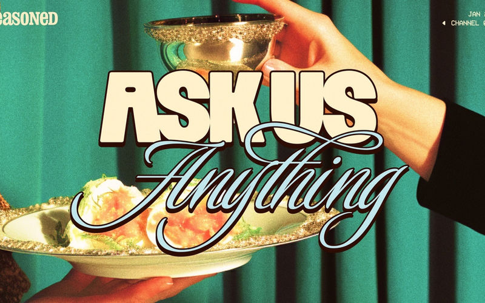
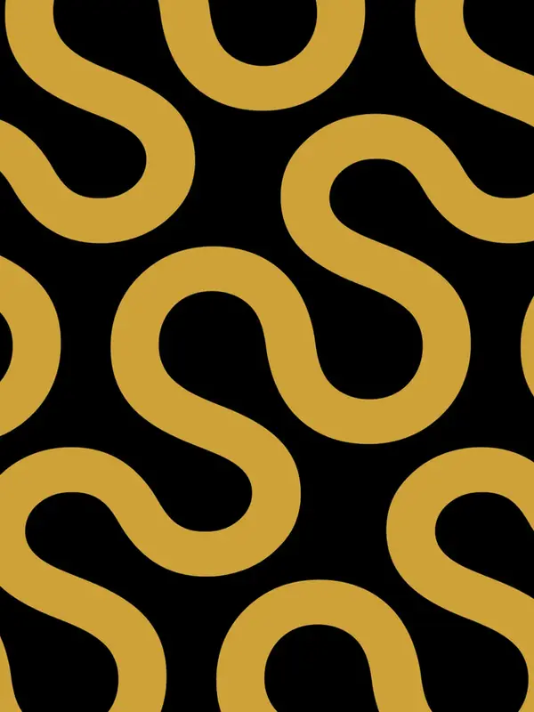
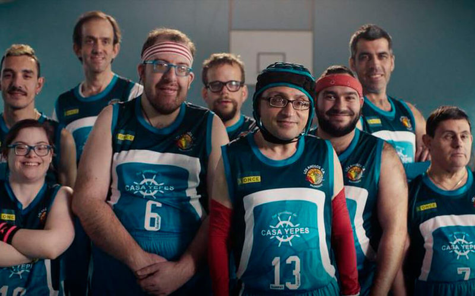
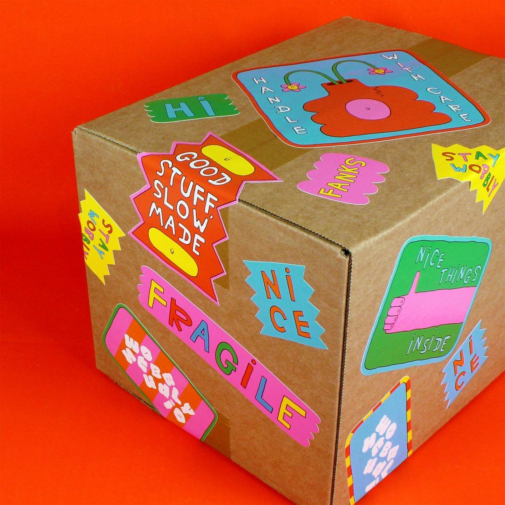

| Stream | Starts | Y1 contribution |
|---|---|---|
| Membership · €12 / mo (~$12) | M4 | €63.6K |
| Newsletter sponsorship | M3 | €25.0K |
| Ads · YouTube / IG / TikTok | M6 | €2.6K |
| Podcast / YouTube sponsorship | M6–M7 | included |
| Total Y1 revenue | €91.2K |